Assembly¶
Contents
Hip Assembly¶
Step 1. Install disc¶
Video Instructions 0:17
Materials: M3x6mm socket head screw, servo disc, loctite, servo arm (to adjust servo motor),
M3x6 socket head screw:
Tools: 2.5mm hex driver
Instructions:
Attach a servo horn (not disc) to the servo and turn the servo into its neutral position and then remove the servo horn
Align the servo disc on the servo shaft so that the disc holes are roughly at 45 degree marks (see picture below)
Put a tiny dab of loctite on the screw
Gently start threading the screw in and then continue to screw it in, this will cause the disc to sink onto the servo spline (the output shaft)
Some of the servo discs are poorly manufactured, so if this is the case for you, it’s expected that it’ll take a lot of torque to start threading the screw. At some point however, the servo disc will finish deforming to fit the shaft and it’ll become a lot easier to screw on. When the disc is fully seated, you’ll again see an increase in torque and you should stop. Do not over-tighten the screw once the disc is fully seated or you risk breaking the servo motor.
Preparing for the assembly
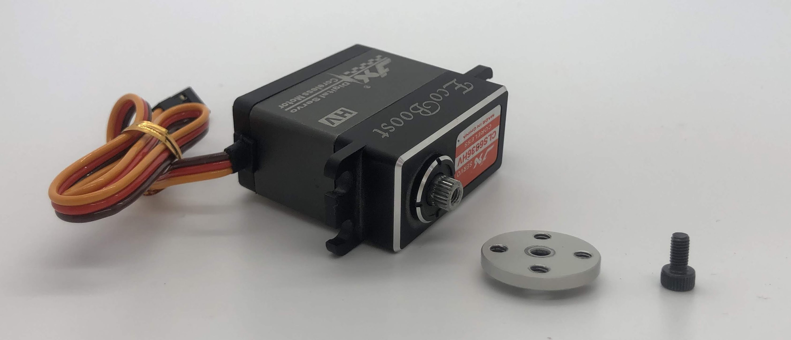Completed step
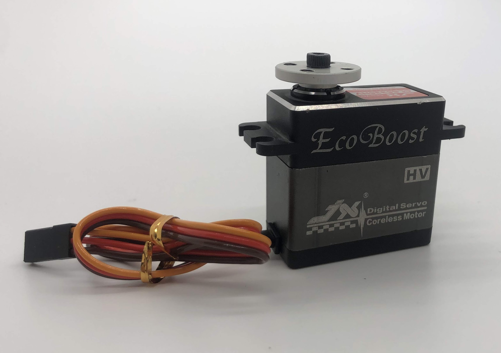Step 2. Install the M3 threaded insert into the inner hip piece¶
No Video Available
Materials: Assembly so far, M3 tapered threaded insert
Tools: Soldering iron
Instructions:
Place the insert into the hole with the tapered side down
Set the soldering iron to around 500f or 260c and then gently press the insert into the plastic. I recommend just using the weight of the iron to press the insert in, and I also suggest doing it in steps, ie pressing it in 1mm, taking the iron out, then pressing another 1mm etc into it is all the way in. This method prevents the soldering iron from getting stuck to the iron.
Step 3. Mount disc to inner hip part¶
Video Instructions 2:05
Materials: M3x8 flat head screw, Inner hip part, loctite
M3x8 flat head screw
Tools: 2mm hex driver
Instructions:
Install the inner hip part at a 90deg angle and then use the access holes on the other side to tighten down the M3x8 flat head screw attaching it to the servo disc.
Preparing for the assembly

Completed step for left side
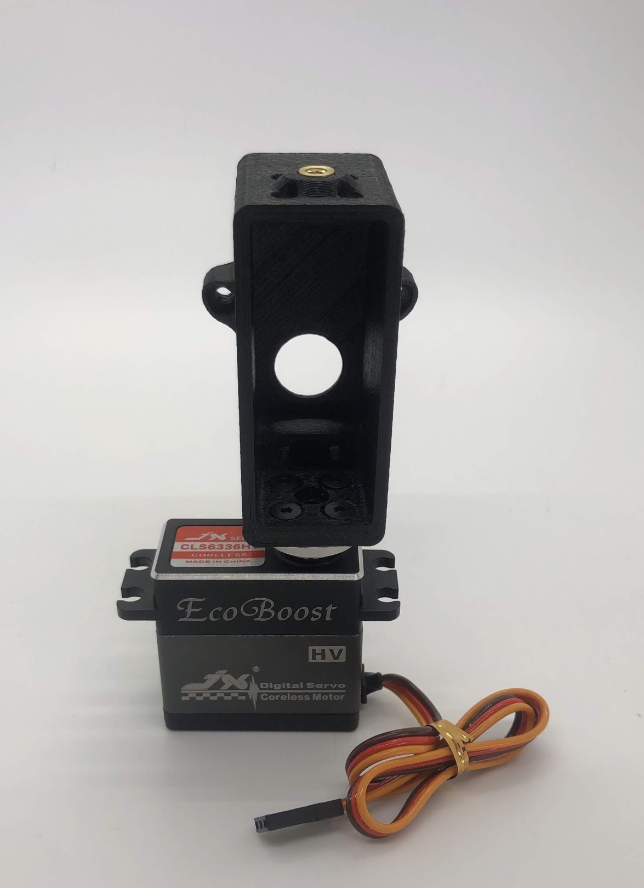Completed step for right side
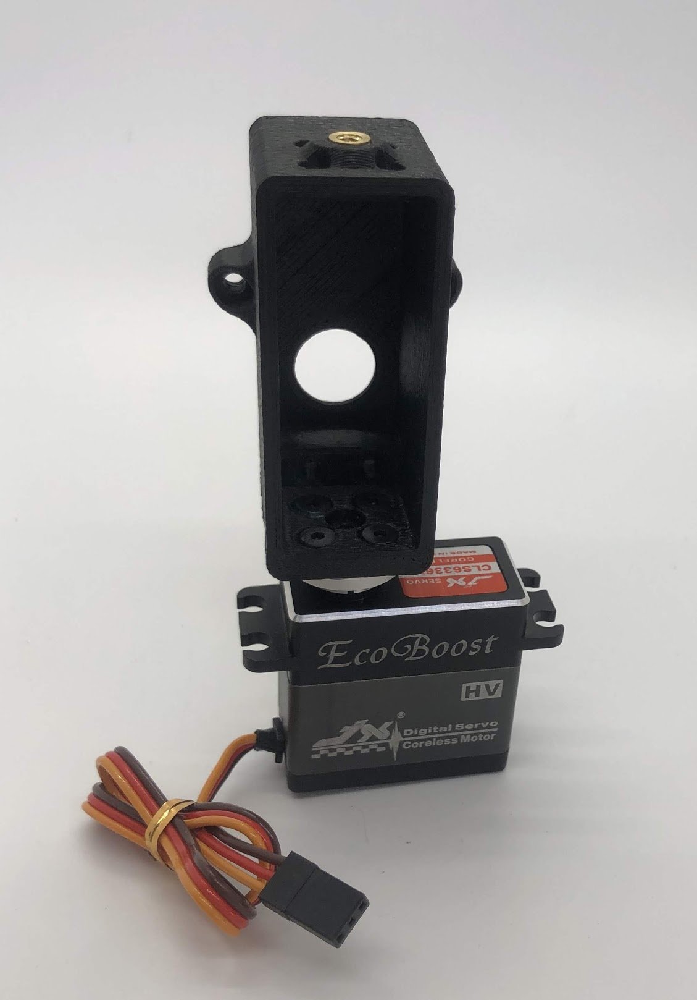Step 4. Install the inner hip servo¶
Video Instructions 3:44
Materials: Inner Hip Assembly so far, servo, M4x10mm screws for plastic (silver), M3x16mm button head, 2x standoff
M4x10mm plastic screw M3x16mm button head
Tools: T20H torx driver, 2mm hex driver
Instructions:
Place servo motor in the inner hip part and gently wiggle such that the servo shaft is sticking out of the big circular hole in the inner hip part
Screw the M4x10mm screws on the left side of the servo and the M3x16mm screws on the right side of the motor. Use locktite on M3x16mm screws
Turn over assembly and screw M3x16mm screws onto standoffs
Preparing for the assembly

Completed step

Another look at the assembly. Note that the plastic screws are on the left, and the M3 screws are on the right
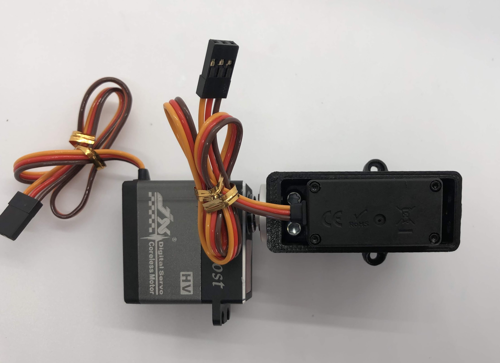Step 5. Install servo horn on inner hip servo¶
Video Instructions 5:19
Materials: Inner Hip Assembly so far, M3x8mm button head screw, M2x8mm socket head screw, servo horn
M3x8mm button head screw M2x8mm socket head screw
Tools: 2mm hex driver
Instructions:
Turn the servo into its neutral position and then slide the horn on at the angle shown (45 degrees downwards)
Screw the M3x8mm screw on to the top of the horn and screw the M2x8mm screws into the side of the horn
Don’t forget to use loctite!
Preparing for the assembly

Completed step for right side

Completed step for left side
Step 6. Attach Leg¶
Not shown in video but recommended because makes assembly easier
Materials: Bottom Leg, Top Leg, 3-part Thrust Bearing x2, Shoulder Bolt, M3 Lock Nut
Tools: 2mm driver, wrench for lock nut
Instructions:
Add one 3-part thrust bearing on the shoulder bolt, then the Bottom leg, then another 3-part thrust bearing, then the Top leg then locking nut. Flip orientation of Bottom and Top leg accordingly for the left and right leg. See pictures for reference.
Preparing for the right assembly
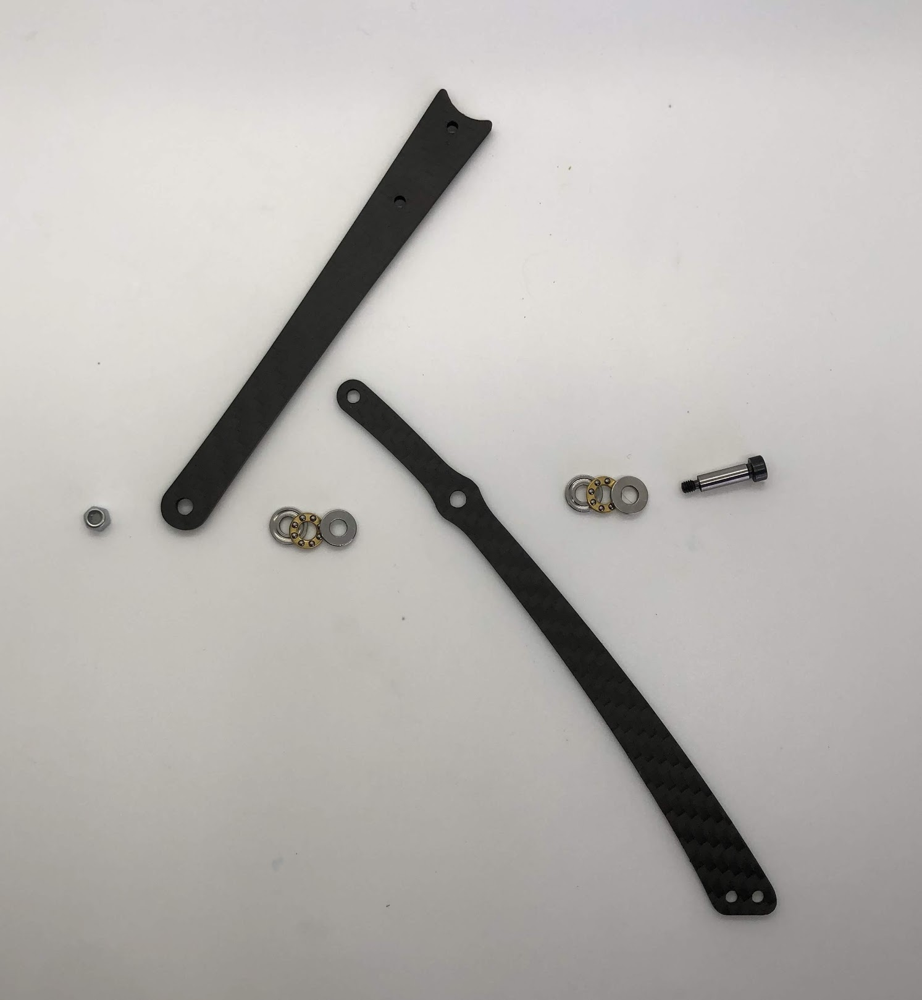Preparing for the left assembly

Step 7. Attach top carbon leg link to servo horn¶
Not shown in video but recommended because makes assembly easier
Materials: Inner Hip Assembly, Leg Assembly, M3x6 Button Head x2.
M3x6 Button Head
Tools: 2mm hex driver
Instructions:
Align the curved edge of the left Top leg with the left Servo horn. Screw in the M3x6 button head screws through the carbon leg holes. Repeat for right side.
Be careful when seating the screw nearest to the servo to ensure it is vertical. It is necessary to hold the screw vertically to avoid cross threading.
Preparing for the assembly

Completed step for right side

Step 8. Install outer hip assembly¶
Video Instructions 7:19
Materials: Servo, outer hip part, M4x10mm screw plastic
M4x10mm plastic screw
Tools: T20H torx driver
Instructions:
Place servo into joint and add affix with two screws closest to the servo spline
Preparing for the assembly

Completed step

Step 9. Install servo horn on outside servo¶
Video Instructions 7:52
Materials: Servo horn, Outer Hip assembly, M3x8 button head, M2x8 socket head
M3x8mm button head screw M2x8mm socket head screw
Tools: 2mm hex driver
Instructions:
Turn the servo horn to its neutral position and then attach the horn at a 45 degree angle as shown.
First tighten the servo horn down with the M3x8, then add the M2x8 screws to tension the servo horn. Similar to Step 5.
Preparing for the assembly

Completed step for right side

Completed step for left side
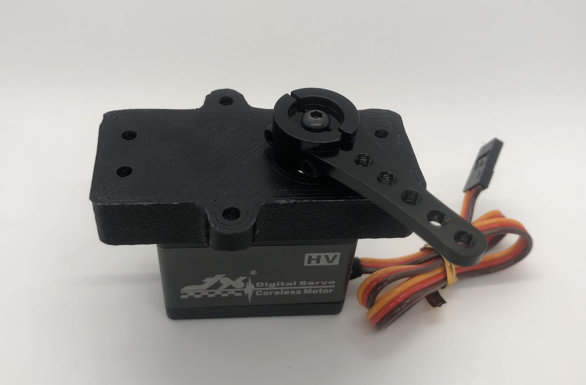Step 10. Assemble the two sides¶
Video Instructions 9:26
Materials: Inner and Outer Hip assembly, M3x16 button head screws for screwing into standoffs, loctite
M3x16mm button head
Tools: 2mm hex driver
Instructions:
Align Inner and Outer Hip assembly, M4x10mm plastic screws should be on the same side and servo horns should be at a 90degree angle.
Connect assemblies with M3x16 screws through Outer Hip assembly to standoffs. Add loctite on screws. Don’t tighten the screws down all the way yet.
At this point, your legs might start to move, feel free to mark your left and right side so you don’t get confused. If you don’t know which side is which, compare with the 3D model: https://stanford195.autodesk360.com/g/shares/SH919a0QTf3c32634dcfedf61e031f673710
Preparing for the assembly

Completed step

Another look at the assembly
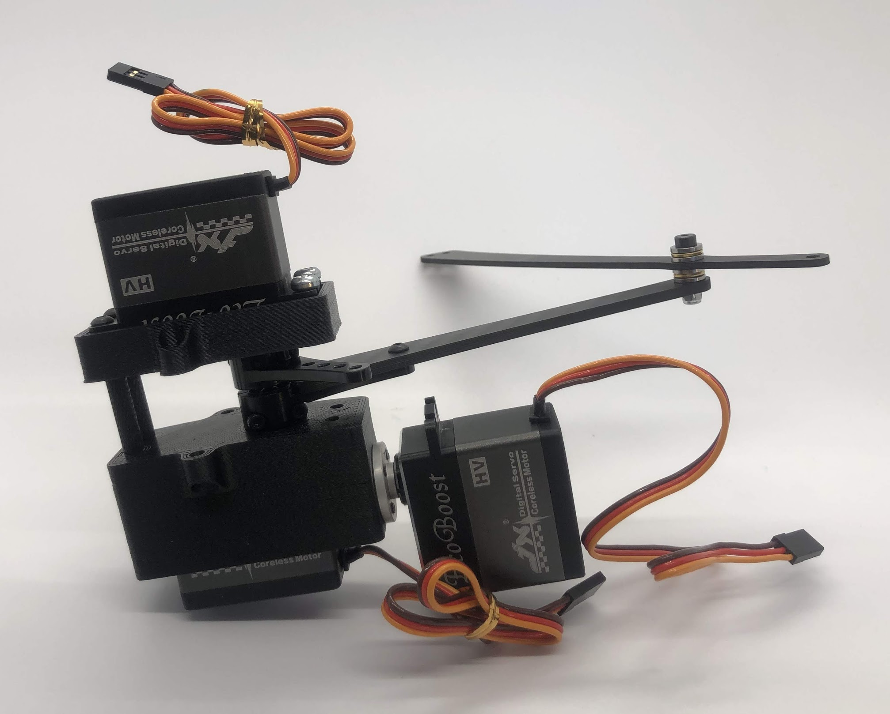Step 11. Assemble the other 2 standoffs¶
Video Instructions 10:09
Materials: Assembly, 4 M3x10 button head screws, 2 standoffs
M3x10 button head screw
Tools: 2mm hex driver
Instructions:
Once you have installed all four standoffs, tighten them all down
Preparing for the assembly

Completed step

Step 12. Test the full range of motion for each servo¶
Instructions:
Hip should go the fully flat on either side
The horn nearest the body should go from 45 degrees upward to fully touching the lower standoff
The horn away from the body should go from touching the standoff upwards to going 45 degrees downward
Step 13. Assemble the upper leg extension rod¶
No Video Available
Materials: Threaded rod, rod end x 2
Tools: None
Instructions: Screw the rod ends on equally until the distance between the furthest holes on the rod match the holes on the upper carbon leg linkage (servo horn center to last carbon drill point). See picture for clarification.
Preparing for the assembly
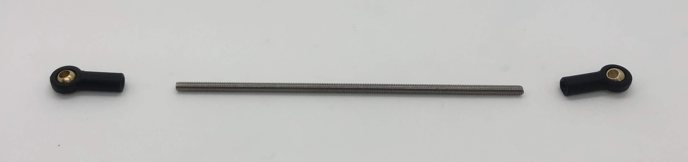Completed step
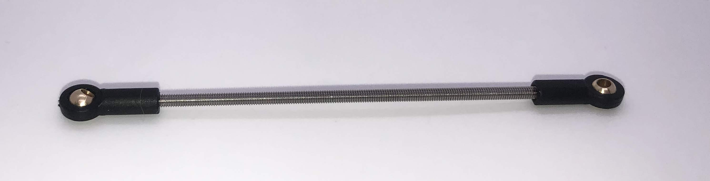Step 14. Attach Upper Leg Extension Rod to Servo Horn¶
No Video Available
Materials: M3x8 button head screw
M3x8mm button head screw
Tools: 2mm driver
Instructions:
From the inside, screw the extension rod to the servo horn with the M3x8 button head screw.
Preparing for the assembly
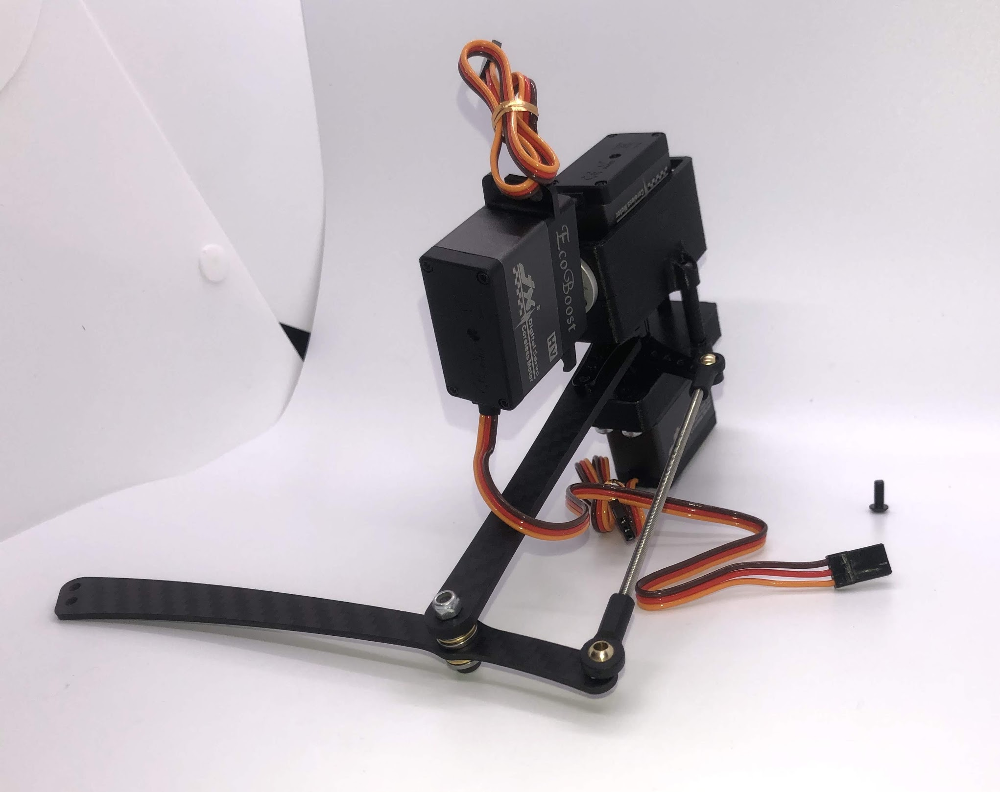Step 15. Attach Upper Leg Extension Rod to Lower Leg Carbon Linkage¶
No Video Available
Materials: M3x10 button head screw, M3 Locking Nut
M3x10 button head screw
Tools: 2mm driver, wrench
Instructions:
From the inside, slide a M3x10 button head screw through the carbon fiber piece and then the rod end. Then fasten the screw with a M3 locknut, using a wrench to keep it in place while you use an allen key to tighten.
Preparing for the assembly

Completed step
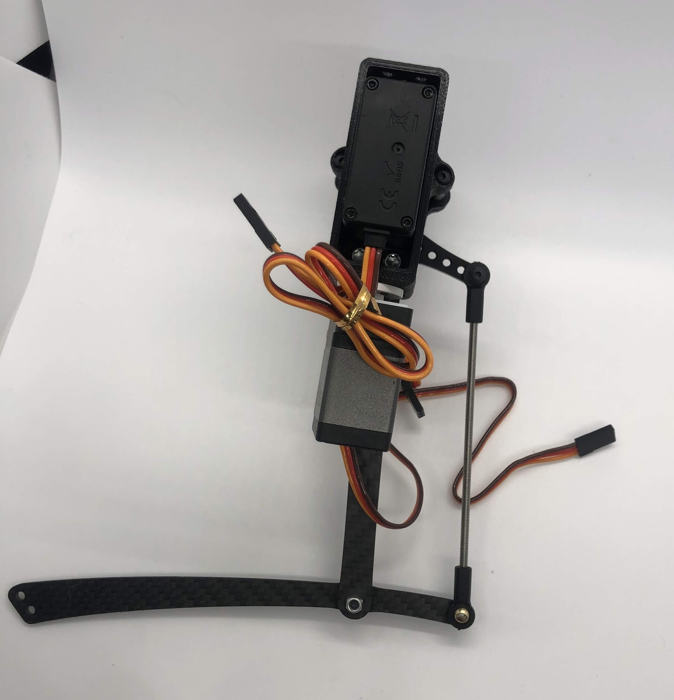Another look at the assembly


Body Assembly¶
Step 1. Install tapered threaded heat inserts into 3D printed parts¶
Video Instructions
Materials: M3 tapered heat-set inserts for plastic x16, 4 body pieces
Tools: Soldering iron set to around 500f / 260c
Instructions:
Each of the 3D printed body pieces have four holes — two on top and two on bottom that hold the tapered heat-set inserts for plastic
Place the insert into the hole with the tapered side down
Use a soldering iron set to around 500f or 260c to gently press the insert into the plastic. I recommend just using the weight of the iron to press the insert in, and I also suggest doing it in steps, ie pressing it in 1mm, taking the iron out, then pressing another 1mm etc into it is all the way in. This method prevents the soldering iron from getting stuck to the iron.
Step 2: Press the radial bearings into the body pieces¶
Video Instructions
Materials: 4 bearings (3mm x 8mm x 4mm Bearing MR693-zz), Front Front body part, Back Front body part
Bearing
Tools: Your hands, arbor press, or vice
Instructions:
Press two bearings into the two holes in the frontmost piece (called Front Front), and two bearings into the two holes in the back piece (called Back Front).
Step 3. Fasten the hip assemblies¶
Video Instructions
Materials: 16x M4x8 screws (plastic), 4x M3x8 button head screw, four hip assemblies, four body parts
M3x8 button head M4x8 screws (plastic)
Tools: Torx T20 + 2mm driver
Instructions:
Use the M4x8 screws for plastic to fasten two hip assemblies to the Back Back body part and another two hip assemblies to the Front Back body part
Then screw the M3x8 button head screws through the bearings you pressed into the Front Front and Back Front parts and thread them into the threaded inserts in the hip assembly
Preparing for the assembly

Completed Step

Another look at the assembly
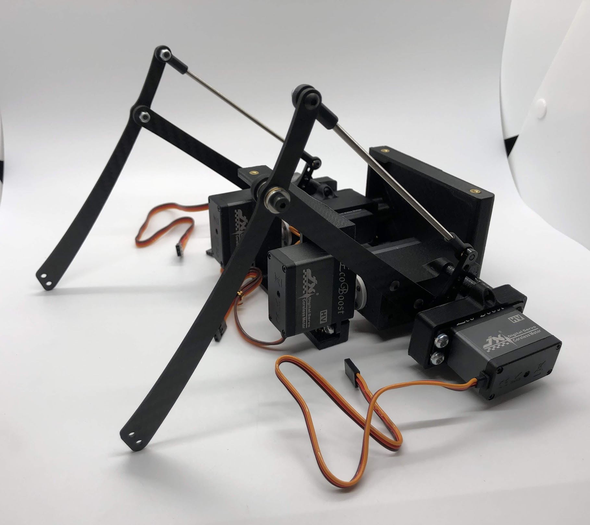Step 4. Attach the two leg/body assemblies to the bottom carbon fiber plate¶
Video Instructions
Materials: 16x M3x6 button head screws, 2 leg/body assemblies, Botton carbon fiber plate
Tools: 2mm hex driver
Instructions:
Use the M3x6 button head screws to fasten the two leg/body assemblies you built to the bottom carbon fiber plate.
Preparing for the assembly

Completed step

Step 5. Prepare and mount the Raspberry Pi case¶
Video Instructions
Materials: Raspberry Pi case (picase.stl), 4x M2.5 tapered heat-set inserts, 4x M2.5x6 socket head screws, Dual Lock
Tools: Soldering iron, 2mm driver
Instructions:
In the same way you installed the previous inserts, press the M2.5 inserts into the holes in the raspberry pi case. Then, use the M2.5x6 socket head screws to screw the raspberry pi to the case
Finally, add Dual-Lock to the case to mount it to the bottom carbon fiber plate
Preparing for the assembly

Completed Step

Step 6. Assemble the PCB (if not done so already)¶
Instructions:
Step 7. Plug in servo motors to Raspberry Pi¶
Video Instructions
Materials: Four hip assemblies mounted to the bottom plate, mounted Raspberry Pi with servo power distribution hat
Tools: None
Instructions:
Plug the servo cables into the custom circuit board in this pattern shown below.
J1 through J12 correspond to one of the twelve sets of header pins soldered to the circuit board. The circuit board has indicators for how to align the signal, ground, and positive wires from the servo motors into the board, but in case they’re too hard to see, you can know that the signal pins on the servo connectors always face towards the Raspberry Pi header.
Preparing for the assembly

Completed step